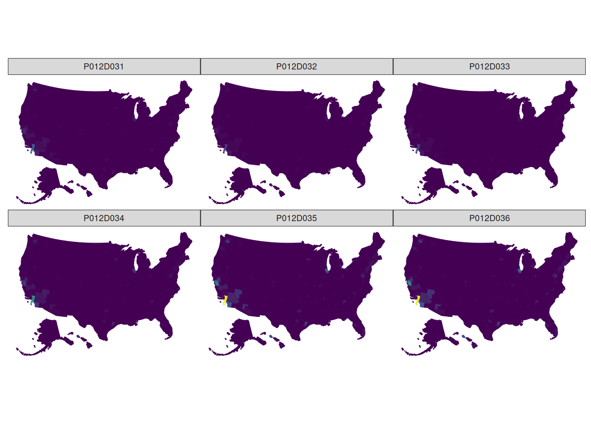
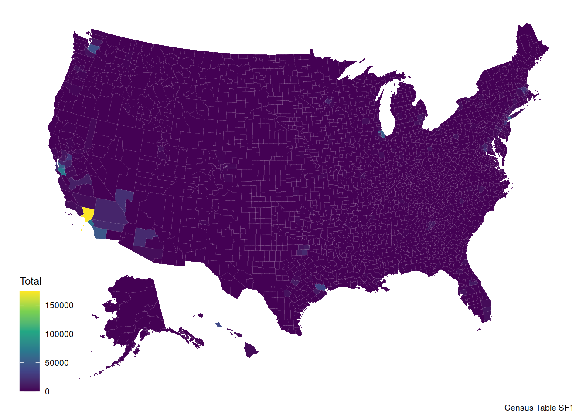
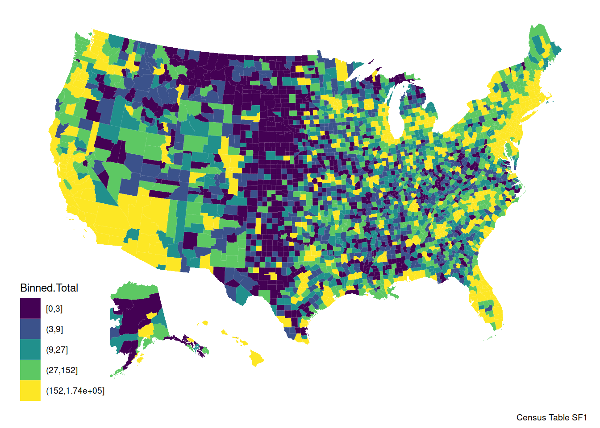
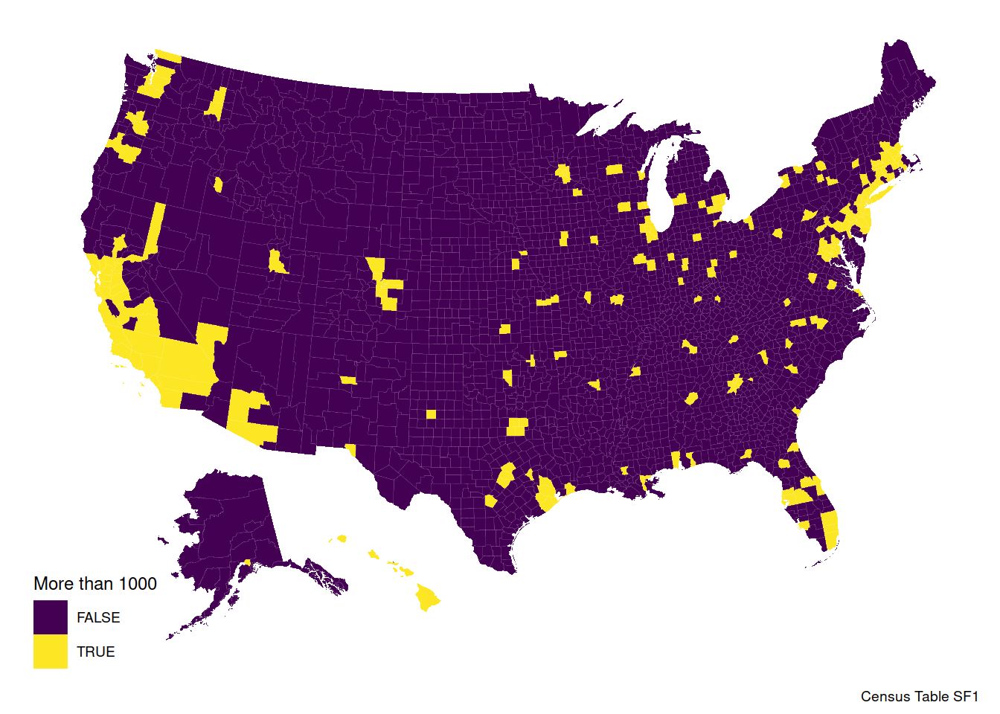
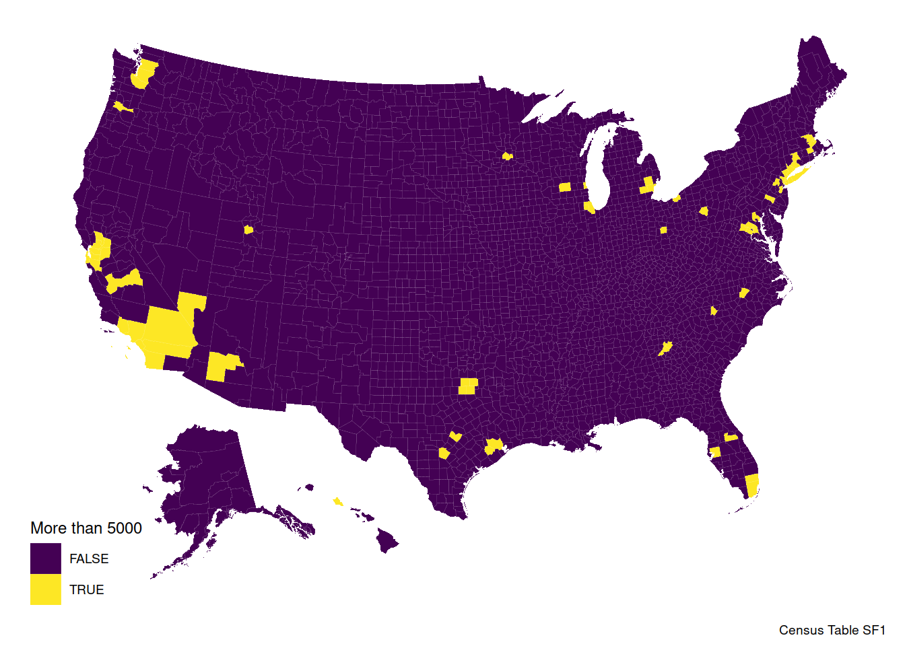
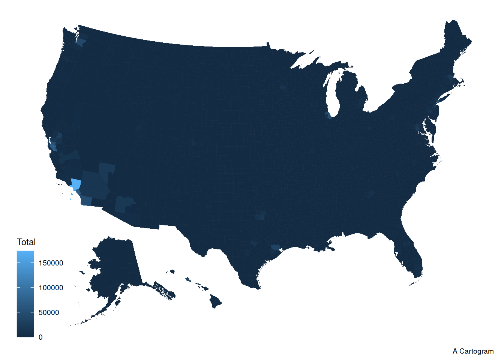

To use tidycensus, there are limitations imposed by the available tables. There is ACS – a survey of about 3 million people – and the two main decennial census files [SF1] and [SF2]. I will search SF1 for the Asian population.
library(tidycensus); library(kableExtra)
library(tidyverse); library(stringr)
v10 <- load_variables(2010, "sf1", cache = TRUE)
v10 %>% filter(str_detect(concept, "ASIAN")) %>% filter(str_detect(label, "Female")) %>% kable() %>% scroll_box(width = "100%")| name | label | concept |
|---|---|---|
| P012D026 | Total!!Female | SEX BY AGE (ASIAN ALONE) |
| P012D027 | Total!!Female!!Under 5 years | SEX BY AGE (ASIAN ALONE) |
| P012D028 | Total!!Female!!5 to 9 years | SEX BY AGE (ASIAN ALONE) |
| P012D029 | Total!!Female!!10 to 14 years | SEX BY AGE (ASIAN ALONE) |
| P012D030 | Total!!Female!!15 to 17 years | SEX BY AGE (ASIAN ALONE) |
| P012D031 | Total!!Female!!18 and 19 years | SEX BY AGE (ASIAN ALONE) |
| P012D032 | Total!!Female!!20 years | SEX BY AGE (ASIAN ALONE) |
| P012D033 | Total!!Female!!21 years | SEX BY AGE (ASIAN ALONE) |
| P012D034 | Total!!Female!!22 to 24 years | SEX BY AGE (ASIAN ALONE) |
| P012D035 | Total!!Female!!25 to 29 years | SEX BY AGE (ASIAN ALONE) |
| P012D036 | Total!!Female!!30 to 34 years | SEX BY AGE (ASIAN ALONE) |
| P012D037 | Total!!Female!!35 to 39 years | SEX BY AGE (ASIAN ALONE) |
| P012D038 | Total!!Female!!40 to 44 years | SEX BY AGE (ASIAN ALONE) |
| P012D039 | Total!!Female!!45 to 49 years | SEX BY AGE (ASIAN ALONE) |
| P012D040 | Total!!Female!!50 to 54 years | SEX BY AGE (ASIAN ALONE) |
| P012D041 | Total!!Female!!55 to 59 years | SEX BY AGE (ASIAN ALONE) |
| P012D042 | Total!!Female!!60 and 61 years | SEX BY AGE (ASIAN ALONE) |
| P012D043 | Total!!Female!!62 to 64 years | SEX BY AGE (ASIAN ALONE) |
| P012D044 | Total!!Female!!65 and 66 years | SEX BY AGE (ASIAN ALONE) |
| P012D045 | Total!!Female!!67 to 69 years | SEX BY AGE (ASIAN ALONE) |
| P012D046 | Total!!Female!!70 to 74 years | SEX BY AGE (ASIAN ALONE) |
| P012D047 | Total!!Female!!75 to 79 years | SEX BY AGE (ASIAN ALONE) |
| P012D048 | Total!!Female!!80 to 84 years | SEX BY AGE (ASIAN ALONE) |
| P012D049 | Total!!Female!!85 years and over | SEX BY AGE (ASIAN ALONE) |
| P013D003 | Median age!!Female | MEDIAN AGE BY SEX (ASIAN ALONE) |
| P018D006 | Total!!Family households!!Other family!!Female householder, no husband present | HOUSEHOLD TYPE (ASIAN ALONE HOUSEHOLDER) |
| P029D006 | Total!!In households!!In family households!!Householder!!Female | HOUSEHOLD TYPE BY RELATIONSHIP (ASIAN ALONE) |
| P029D022 | Total!!In households!!In nonfamily households!!Female householder | HOUSEHOLD TYPE BY RELATIONSHIP (ASIAN ALONE) |
| P029D023 | Total!!In households!!In nonfamily households!!Female householder!!Living alone | HOUSEHOLD TYPE BY RELATIONSHIP (ASIAN ALONE) |
| P029D024 | Total!!In households!!In nonfamily households!!Female householder!!Not living alone | HOUSEHOLD TYPE BY RELATIONSHIP (ASIAN ALONE) |
| P034D006 | Total!!In households!!In family households!!Householder!!Female | HOUSEHOLD TYPE BY RELATIONSHIP FOR THE POPULATION 65 YEARS AND OVER (ASIAN ALONE) |
| P034D016 | Total!!In households!!In nonfamily households!!Female householder | HOUSEHOLD TYPE BY RELATIONSHIP FOR THE POPULATION 65 YEARS AND OVER (ASIAN ALONE) |
| P034D017 | Total!!In households!!In nonfamily households!!Female householder!!Living alone | HOUSEHOLD TYPE BY RELATIONSHIP FOR THE POPULATION 65 YEARS AND OVER (ASIAN ALONE) |
| P034D018 | Total!!In households!!In nonfamily households!!Female householder!!Not living alone | HOUSEHOLD TYPE BY RELATIONSHIP FOR THE POPULATION 65 YEARS AND OVER (ASIAN ALONE) |
| P038D015 | Total!!Other family!!Female householder, no husband present | FAMILY TYPE BY PRESENCE AND AGE OF OWN CHILDREN (ASIAN ALONE HOUSEHOLDER) |
| P038D016 | Total!!Other family!!Female householder, no husband present!!With own children under 18 years | FAMILY TYPE BY PRESENCE AND AGE OF OWN CHILDREN (ASIAN ALONE HOUSEHOLDER) |
| P038D017 | Total!!Other family!!Female householder, no husband present!!With own children under 18 years!!Under 6 years only | FAMILY TYPE BY PRESENCE AND AGE OF OWN CHILDREN (ASIAN ALONE HOUSEHOLDER) |
| P038D018 | Total!!Other family!!Female householder, no husband present!!With own children under 18 years!!Under 6 years and 6 to 17 years | FAMILY TYPE BY PRESENCE AND AGE OF OWN CHILDREN (ASIAN ALONE HOUSEHOLDER) |
| P038D019 | Total!!Other family!!Female householder, no husband present!!With own children under 18 years!!6 to 17 years only | FAMILY TYPE BY PRESENCE AND AGE OF OWN CHILDREN (ASIAN ALONE HOUSEHOLDER) |
| P038D020 | Total!!Other family!!Female householder, no husband present!!No own children under 18 years | FAMILY TYPE BY PRESENCE AND AGE OF OWN CHILDREN (ASIAN ALONE HOUSEHOLDER) |
| P039D015 | Total!!Other family!!Female householder, no husband present | FAMILY TYPE BY PRESENCE AND AGE OF RELATED CHILDREN (ASIAN ALONE HOUSEHOLDER) |
| P039D016 | Total!!Other family!!Female householder, no husband present!!With related children under 18 years | FAMILY TYPE BY PRESENCE AND AGE OF RELATED CHILDREN (ASIAN ALONE HOUSEHOLDER) |
| P039D017 | Total!!Other family!!Female householder, no husband present!!With related children under 18 years!!Under 6 years only | FAMILY TYPE BY PRESENCE AND AGE OF RELATED CHILDREN (ASIAN ALONE HOUSEHOLDER) |
| P039D018 | Total!!Other family!!Female householder, no husband present!!With related children under 18 years!!Under 6 years and 6 to 17 years | FAMILY TYPE BY PRESENCE AND AGE OF RELATED CHILDREN (ASIAN ALONE HOUSEHOLDER) |
| P039D019 | Total!!Other family!!Female householder, no husband present!!With related children under 18 years!!6 to 17 years only | FAMILY TYPE BY PRESENCE AND AGE OF RELATED CHILDREN (ASIAN ALONE HOUSEHOLDER) |
| P039D020 | Total!!Other family!!Female householder, no husband present!!No related children under 18 years | FAMILY TYPE BY PRESENCE AND AGE OF RELATED CHILDREN (ASIAN ALONE HOUSEHOLDER) |
There are still 268 to comb through but what seems useful are the bottom rows of the first set of results.
library(viridis)## Loading required package: viridisLitelibrary(sf); library(ggthemes)## Linking to GEOS 3.8.0, GDAL 3.0.4, PROJ 6.3.1# I need supply the names of the variables to fetch from Census: column `name` above
vars10 <- c("P012D031", "P012D032", "P012D033", "P012D034", "P012D035", "P012D036")
# Get the census data with the relevant map by county; 2010 is the most recent
# I used the example from the help file to adapt by dropping the state to get them all and shifting Hawaii and Alaska for visibility. They are not properly scaled.
MapDat <- get_decennial(geography = "county", variables = vars10, year = 2010,
geometry = TRUE, shift_geo = TRUE)## Getting data from the 2010 decennial Census## Using feature geometry obtained from the albersusa package## Please note: Alaska and Hawaii are being shifted and are not to scale.# Map the data with ggplot using geom_sf()
ggplot(MapDat, aes(fill = value, color = value)) +
geom_sf() +
theme_map() +
scale_fill_viridis_c(guide=FALSE)+
scale_color_viridis_c(guide=FALSE) +
facet_wrap(~variable)
## `summarise()` ungrouping output (override with `.groups` argument)
A plotly
library(plotly)##
## Attaching package: 'plotly'## The following object is masked from 'package:ggplot2':
##
## last_plot## The following object is masked from 'package:stats':
##
## filter## The following object is masked from 'package:graphics':
##
## layoutPLM <- ggplotly(PlotlyMe)
library(widgetframe)## Loading required package: htmlwidgetshtmlwidgets::saveWidget(
widgetframe::frameableWidget(PLM), here:::here('static/img/widgets/plm11map.html'))To get rid of some of the messiness because LA is a huge outlier, perhaps it should be binned.
MapDatSum <- MapDatSum %>% mutate(Binned.Total = cut_number(Total, 5, ordered_result=TRUE))
PlotlyMe <- ggplot(MapDatSum, aes(fill = Binned.Total, text=NAME)) +
geom_sf(size=0.02, color="white") + theme_map() + scale_fill_viridis_d() + labs("Asian Females Ages 18 to 34", caption = "Census Table SF1")
PlotlyMe
MapDatSum <- MapDatSum %>% mutate(Total.1000 = as.factor(Total > 1000))
PlotlyMe <- ggplot(MapDatSum, aes(fill = Total.1000, text=NAME)) +
geom_sf(size=0.02, color="white") + theme_map() + scale_fill_viridis_d() + labs("Asian Females Ages 18 to 34", caption = "Census Table SF1", fill="More than 1000")
PlotlyMe
MapDatSum <- MapDatSum %>% mutate(Total.5000 = as.factor(Total > 5000))
PlotlyMe <- ggplot(MapDatSum, aes(fill = Total.5000)) +
geom_sf(size=0.02, color="white") + theme_map() + scale_fill_viridis_d() + labs("Asian Females Ages 18 to 34", caption = "Census Table SF1", fill="More than 5000")
PlotlyMe
MapDatSum <- MapDatSum %>% mutate(Total.10K = as.factor(Total > 10000))
PlotlyMe <- ggplot(MapDatSum, aes(fill = Total.10K)) +
geom_sf(size=0.02, color="white") + theme_map() + scale_fill_viridis_d() + labs("Asian Females Ages 18 to 34", caption = "Census Table SF1", fill="More than 10000")
PlotlyMe# This takes a really long time to run. It is not evaluated.
library(cartogram)
Carto <- cartogram_cont(
MapDatSum,
"Total",
itermax = 15,
maxSizeError = 1.0001,
prepare = "adjust",
threshold = 0.05
)Load the cartogram already cooked.
load(url("https://github.com/robertwwalker/DADMStuff/raw/master/Cartogram.RData"))
ggplot(Carto, aes(fill=Total)) + geom_sf(size=0.01) + theme_map() + labs(caption="A Cartogram")